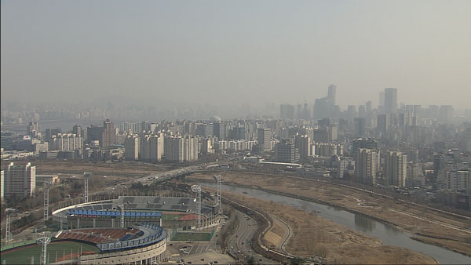
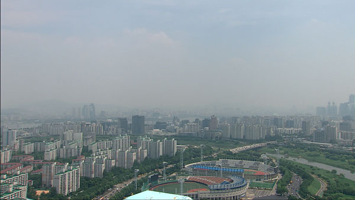

2019년 3월 5일은 관측 이래 최악의 초미세먼지(PM 2.5)가 한반도를 덮쳤습니다. 이날 서울의 일평균 초미세먼지는 137㎍/㎥로 2015년 관측 이래 역대 최고치로 기록됐습니다. 아울러 3월 1일부터 7일까지 수도권에서 사상 최초로 비상저감조치가 7일 연속으로 시행됐습니다.
매일 정오에 방송되는 'SBS 12시 뉴스'는 앵커의 인사와 함께 서울 도심을 보여주는 실시간 영상으로 끝납니다. SBS 데이터저널리즘팀 <마부작침>은 '12시 뉴스'를 통해 방송된 최근 1년간(2018년 3월 11일~2019년 3월 10일) 서울 도심 영상을 캡처해 서울시 초미세먼지 수치와 비교했습니다. 남북정상회담 또는 북미정상회담 등으로 '12시 뉴스'가 방송되지 않은 14일은 제외했습니다. (실제 12시 뉴스 엔딩 영상을 보여줄까?)
카메라는 서울 양천구 목동 SBS 본사 옥상에 고정돼 있습니다. 카메라가 동쪽을 찍으면 목동운동장과 국회의사당, 남산서울타워 등이 보이고, 북쪽을 찍으면 성산대교 등이 보입니다.
서울 지도에 SBS 위치와 동쪽 카메라 전망 표시하고, 목동운동장, 국회의사당, 서울N타워 정도 표시
실제 사진
서울 지도에 SBS 위치와 북쪽 카메라 전망 표시하고, 성산대교 정도 표시
실제 사진
초미세먼지와 가시거리


청명한 날과 미세먼지가 가득한 날의 가시거리 차이는 상당합니다. 초미세먼지(PM 2.5) 농도가 높아지면 빛이 미세먼지에 의해 여러 방향으로 흩어지거나, 미세먼지에 흡수돼 가시거리가 감소합니다. 황산염, 질산염 등 초미세먼지 농도가 높은 상태에서 습도까지 높아지면 대기오염물질이 수분을 흡수해 가시거리는 더욱 짧아집니다. 물론 미세먼지 농도가 높을 때 뿐 아니라 날씨가 흐리거나 안개 낀 날에도 가시거리는 짧아집니다.
초미세먼지가 4㎍/㎥를 기록했던 2018년 7월 7일에는 SBS에서 직선거리로 3.6km인 국회의사당은 물론, 10,4km 떨어진 서울N타워 역시 뚜렷하게 보입니다. 반면 초미세먼지가 119㎍/㎥를 기록했던 2019년 3월 4일에는 3.6km 떨어진 국회의사당 조차 제대로 보이지 않고 강북쪽 건물은 식별조차 되지 않습니다.
초미세먼지 나쁜 날, 좋은 날
2018년 3월 11일부터 2019년 3월 10일까지 1년 동안 서울의 평균 초미세먼지는 26㎍/㎥를 기록했습니다. 우리나라 대기환경기준에서 정하고 있는 연평균 25㎍/㎥를 초과했고, 미세먼지에 대한 WHO 권고기준인 10㎍/㎥의 2배가 넘습니다.
위 사진은 지난 1년 동안 초미세먼지가 가장 높았던 날들과 가장 낮았던 날들입니다. 가장 높았던 날은 2019년 3월 5일로 초미세먼지 137㎍/㎥를 기록했고, 가장 낮았던 날은 2018년 7월 6일로 3㎍/㎥를 기록해 약 46배 차이를 보였습니다.
1년 서울 일평균 초미세먼지 캘린더
365일 가운데 초미세먼지 수치가 '좋음'을 기록한 날은 116일, '보통'은 171일, '나쁨'은 67일, '매우나쁨'은 11일이었습니다.
(좋음 0~15 보통 16~35 나쁨 36~75 매우나쁨 76~)
초미세먼지 '나쁨' 이상의 날은 주로 며칠간 이어집니다. 2018년 3월 23일부터 3월 30일까지 8일간 초미세먼지 나쁨 이상의 수치가 이어졌는데, 2019년 2월 27일부터 3월 7일까지 9일 연속 초미세먼지 수치가 '나쁨' 이상을 기록하면서 또 새로운 기록을 세웠습니다.